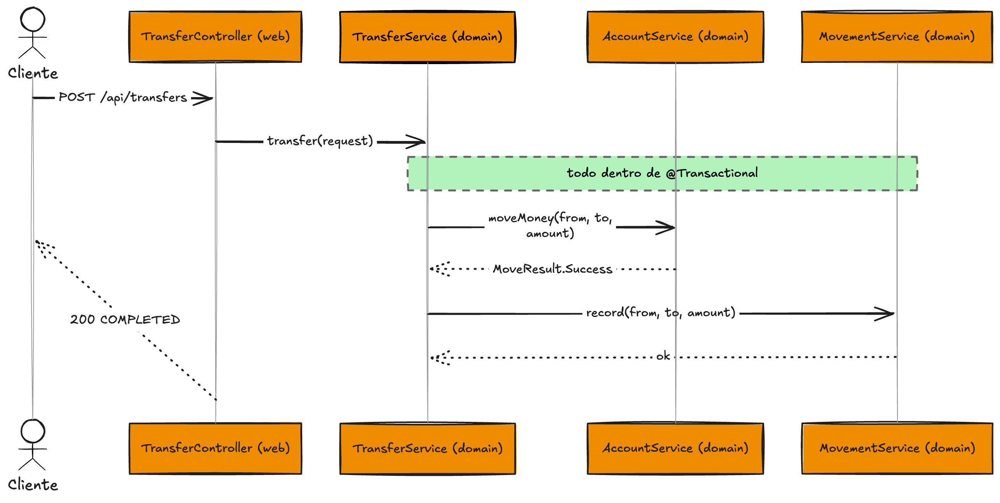

Fase 4 · Registro de movimientos¶
Rama: fase-4
Lo que vas a lograr: dejar registrado cada movimiento en su propia tabla, con una llamada directa desde transfer. Y de paso, ver por qué esa llamada directa nos va a estorbar más adelante.
Al terminarla tienes la wallet completa por REST: el flujo síncrono de punta a punta. Es también el punto de partida de la parte de eventos.
Parte 1 — El movimiento como entidad¶
La feature movement guarda un registro por cada transferencia: de quién, a quién, cuánto y cuándo.
package com.baqjug.wallet.movement.domain
import jakarta.persistence.Column
import jakarta.persistence.Entity
import jakarta.persistence.Id
import jakarta.persistence.Table
import java.math.BigDecimal
import java.time.Instant
import java.util.UUID
@Entity
@Table(name = "movements")
class MovementEntity(
@Column(nullable = false)
val fromId: UUID,
@Column(nullable = false)
val toId: UUID,
@Column(nullable = false, precision = 19, scale = 2)
val amount: BigDecimal,
@Column(nullable = false)
val occurredAt: Instant = Instant.now(),
@Id
val id: UUID = UUID.randomUUID()
)
package com.baqjug.wallet.movement.domain
import org.springframework.data.jpa.repository.JpaRepository
import java.util.UUID
interface MovementRepository : JpaRepository<MovementEntity, UUID>
La migración para su tabla:
CREATE TABLE movements (
id UUID NOT NULL,
from_id UUID NOT NULL,
to_id UUID NOT NULL,
amount NUMERIC(19, 2) NOT NULL,
occurred_at TIMESTAMPTZ NOT NULL,
CONSTRAINT pk_movements PRIMARY KEY (id)
);
El nombre de las columnas
En la entidad la propiedad es fromId (camelCase) y en la tabla la columna es from_id (snake_case). Spring Boot mapea entre esos dos estilos por defecto. Si algún día no coincide, lo fijas con @Column(name = "...").
Parte 2 — El servicio de movimientos¶
El servicio de movimientos es una clase concreta en movement/domain, igual que hicimos con account. Sin interfaz: una sola clase que guarda un movimiento.
package com.baqjug.wallet.movement.domain
import org.springframework.stereotype.Service
import org.springframework.transaction.annotation.Transactional
import java.math.BigDecimal
import java.util.UUID
@Service
@Transactional
class MovementService(
private val repository: MovementRepository
) {
fun record(fromId: UUID, toId: UUID, amount: BigDecimal) {
repository.save(MovementEntity(fromId = fromId, toId = toId, amount = amount))
}
}
Kotlin al paso: argumentos con nombre
Al construir el MovementEntity escribí fromId = fromId, toId = toId, .... Eso son argumentos con nombre: en vez de depender del orden, nombras cada parámetro. En un constructor con varios campos del mismo tipo (acá hay tres UUID), esto evita el clásico error de invertir dos valores sin darte cuenta.
Parte 3 — La llamada directa desde transfer¶
En la Fase 3, la rama Success del when quedó vacía, esperando trabajo. Ahora se lo damos: cuando el movimiento de plata sale bien, transfer llama a movement para registrarlo.
package com.baqjug.wallet.transfer.domain
import com.baqjug.wallet.account.domain.AccountNotFoundException
import com.baqjug.wallet.account.domain.AccountService
import com.baqjug.wallet.account.domain.InsufficientFundsException
import com.baqjug.wallet.account.domain.MoveResult
import com.baqjug.wallet.movement.domain.MovementService
import org.springframework.stereotype.Service
@Service
class TransferService(
private val accountService: AccountService,
private val movementService: MovementService
) {
fun transfer(request: TransferRequest) {
require(request.fromId != request.toId) {
"No puedes transferir a la misma cuenta"
}
when (val result = accountService.moveMoney(request.fromId, request.toId, request.amount)) {
is MoveResult.Success ->
// Llamada directa y síncrona. Anota esto: acá está la costura.
movementService.record(request.fromId, request.toId, request.amount)
is MoveResult.InsufficientFunds -> throw InsufficientFundsException()
is MoveResult.AccountNotFound -> throw AccountNotFoundException(result.id)
}
}
}
Acá está la costura
Fíjate qué acabamos de hacer: transfer ahora conoce a movement y lo llama en línea, en la rama Success. Funciona. Pero si mañana además hay que mandar un correo, disparar un push y avisar a antifraude, todos esos van a colgarse de esta misma rama. Y si movement se pone lento o falla, la transferencia se cuelga o se cae con él. Esa es exactamente la costura que en la Fase 6 vamos a cortar con eventos.
Visto de punta a punta, así recorre una transferencia exitosa el flujo síncrono, ya con el registro del movimiento incluido:

Parte 4 — Un test que corre sin base¶
Antes de cerrar, un test de la orquestación de transfer. Lo bueno: no necesita base ni Spring. Como transfer depende de dos clases concretas (AccountService y MovementService), las mockeamos: creamos versiones falsas al vuelo, les decimos qué responder, y verificamos con quién habló transfer.
Para eso usamos MockK, la librería de mocking de Kotlin. Se agrega como dependencia de test:
Sobre la versión
Usa la versión estable más reciente de MockK; la de arriba es solo un punto de partida. Como no la administra el BOM de Spring, el número de versión lo pones tú.
Y el test:
package com.baqjug.wallet.transfer.domain
import com.baqjug.wallet.account.domain.AccountService
import com.baqjug.wallet.account.domain.InsufficientFundsException
import com.baqjug.wallet.account.domain.MoveResult
import com.baqjug.wallet.movement.domain.MovementService
import io.mockk.every
import io.mockk.mockk
import io.mockk.verify
import org.junit.jupiter.api.Assertions.assertThrows
import org.junit.jupiter.api.Test
import java.math.BigDecimal
import java.util.UUID
class TransferServiceTest {
private val accountService = mockk<AccountService>()
private val movementService = mockk<MovementService>(relaxed = true)
private val transferService = TransferService(accountService, movementService)
@Test
fun `registra el movimiento cuando la transferencia se completa`() {
every { accountService.moveMoney(any(), any(), any()) } returns MoveResult.Success
transferService.transfer(
TransferRequest(UUID.randomUUID(), UUID.randomUUID(), BigDecimal("5.00"))
)
verify(exactly = 1) { movementService.record(any(), any(), any()) }
}
@Test
fun `lanza excepcion y no registra cuando no hay saldo`() {
every { accountService.moveMoney(any(), any(), any()) } returns MoveResult.InsufficientFunds
assertThrows(InsufficientFundsException::class.java) {
transferService.transfer(
TransferRequest(UUID.randomUUID(), UUID.randomUUID(), BigDecimal("5.00"))
)
}
verify(exactly = 0) { movementService.record(any(), any(), any()) }
}
}
Concepto al paso: mock, y por qué no necesitamos interfaces para testear
Un mock es una versión falsa de una dependencia, hecha para el test. Con MockK, mockk<AccountService>() crea un doble de esa clase; every { ... } returns ... le dice qué contestar; y verify { ... } comprueba que un método se llamó (o no). Fíjate el detalle que conecta con la Fase 0: AccountService y MovementService son clases concretas, sin interfaz, y aun así las mockeamos sin problema. Por eso en Tomato Architecture no creamos interfaces "para poder testear": las librerías de mocking ya saben mockear clases. La interfaz por la interfaz no aporta nada.
Kotlin al paso: relaxed = true y verify
A movementService lo creamos con relaxed = true: MockK le da un comportamiento por defecto a todos sus métodos, así no truena aunque no le configuremos nada. Lo usamos porque de él solo nos interesa verificar que lo llamaron (verify(exactly = 1) { ... } en el caso feliz, exactly = 0 cuando no hay saldo), no qué devuelve. A accountService sí lo dejamos estricto y le decimos exactamente qué responder con every.
Kotlin al paso: nombres de test entre backticks
En Kotlin puedes nombrar una función con espacios si la envuelves en backticks: `registra el movimiento cuando...`. Para tests es oro: el nombre se lee como una frase y el reporte queda claro.
Paquetes de test movidos en Spring Boot 4
Si más adelante escribes tests de integración con anotaciones como @DataJpaTest, ojo: en Boot 4 varias se mudaron de paquete. @DataJpaTest ahora viene de org.springframework.boot.data.jpa.test.autoconfigure. Si copias un tutorial de Boot 3, los imports no compilan.
Cierre de la fase¶
./gradlew test
git add .
git commit -m "fase-4: registro de movimientos por llamada directa y test de orquestación"
git branch fase-4
Con esto tienes el flujo síncrono completo: una wallet que consulta saldo, transfiere validando el saldo, y registra cada movimiento. Todo por REST, contra Supabase, y con un test que corre sin base ni broker.
¡Y ese es un cierre redondo! Construiste, desde cero, una wallet que mueve plata de verdad: dominio con dinero exacto (BigDecimal), transferencias transaccionales que no dejan saldos rotos, una API REST limpia organizada por features, manejo de errores centralizado y pruebas con MockK. Nada de humo.
Lo lograste 🎉
Tienes una wallet funcional de punta a punta. ¿Quieres ir más allá o ver a dónde sigue esta historia? Hablemos: geovannycode.com · @geovannycode. En BAQJUG seguimos construyendo.